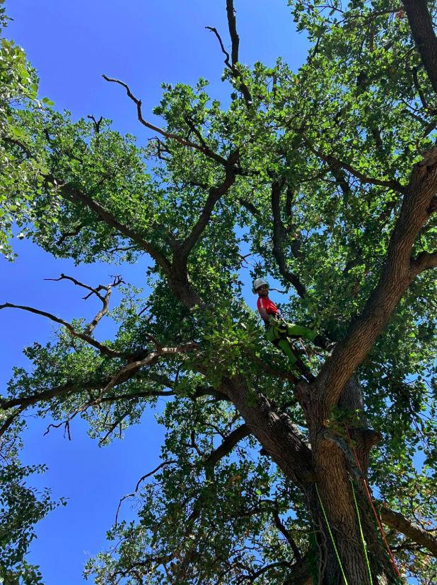

Potatura alberi: quando intervenire e quali errori evitare
Scopri quando è necessario potare un albero, perché la capitozzatura è dannosa e quali tecniche di taglio rispettare per proteggere la fisiologia della pianta.
Leggi la guida completa →